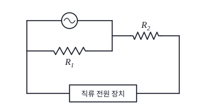
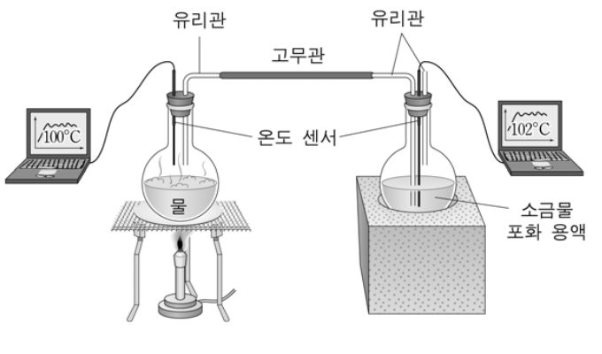
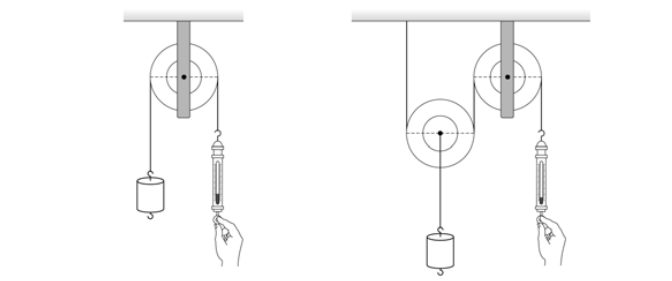

물리교육론 객관식 4문항 — 회로 평가 문항·숨은열 실험·관성 지도·도르래 탐구Assessment item on circuits (vine model) · latent heat demo (Popper) · teaching inertia · pulley inquiry (advance organizer, Klopfer)
다음은 중학교 교사가 작성한 [평가 문항]과 [학생의 응답 결과]이다.
[평가 문항] 다음과 같은 회로를 구성하였더니 불이 켜졌다.

(1) \(R_2=0\)일 때, 저항 \(R_1\)의 크기를 크게 하면 전구의 밝기는 어떻게 될까? ㉠ 밝아진다 ㉡ 어두워진다 ㉢ 변화 없다
• 그렇게 생각한 이유는? ________
(2) \(R_2\ne0\)일 때, 저항 \(R_1\)의 크기를 크게 하면 전구의 밝기는 어떻게 될까? ㉠ 밝아진다 ㉡ 어두워진다 ㉢ 변화 없다
• 그렇게 생각한 이유는? ________
[학생의 응답 결과]
| 학생 \ 문항 | (1) | (2) |
|---|---|---|
| A | • 답: ㉠ • 이유: 저항 \(R_1\)쪽에서 감소한 전류의 양만큼 전구 쪽으로 전류가 더 흘렀다. | (생략) |
| B | • 답: ㉢ • 이유: (생략) | • 답: ㉠ • 이유: (생략) |
이에 대한 설명으로 옳은 것만을 <보기>에서 있는 대로 고른 것은?
- ㄱ. 이 문항의 내용은 2007년 개정 과학과 교육과정에서 9학년 ‘전기’에 해당된다.
- ㄴ. 학생 A에게 저항 \(R_1\)에 흐르는 전류의 변화 자료를 제공하면 옳은 답을 찾을 수 있다.
- ㄷ. 학생 B에게 실제 실험 결과를 제시하는 것은 파인즈와 웨스트(A. Pines & L. West)의 포도 덩굴 모형의 네 가지 상황 중 ‘갈등 상황’이다.
다음은 「물리Ⅱ」 수업에서 숨은열의 효과를 실험으로 확인하는 과정이다.
교사: ㉠지난 시간에는 물의 상태 변화와 숨은열에 대해 배웠습니다. 오늘은 이와 관련된 흥미로운 실험을 해 보겠습니다. 여러분은 100 ℃의 수증기를 이용하여 소금물을 100 ℃ 이상으로 가열하는 것이 가능하다고 생각하나요?
학생 A: ㉡열평형 이론에 의하면 접촉한 두 물체의 온도가 서로 같아져야 합니다. 따라서 100 ℃의 물체가 다른 물체를 100 ℃ 이상으로 올리는 것은 불가능합니다.
학생 B: 글쎄요? 가능할 것도 같은데…….
교사: 그럼, 우리 한번 실험해 볼까요?
[실험 장치]

[실험 과정] (생략)
학생 A: 어? 소금물의 온도가 100 ℃보다 높네. 알았어! 이 현상은 ㉢수증기가 원래 100 ℃였지만, 플라스크 안에서 계속 가열되었기 때문에 수증기 온도가 100 ℃ 이상으로 올라가게 된 거야.
학생 B: 아니야, 나는 숨은열의 의미를 이해했어.
이 실험에 대한 설명으로 옳은 것만을 <보기>에서 있는 대로 고른 것은? [2.5점]
- ㄱ. ㉠과 관련하여 이 실험에서 숨은열의 개념을 적용하기 위해서는 연역적 추론 과정이 필요하다.
- ㄴ. ㉡은 수증기가 상태 변화를 할 때, 숨은열이 소금물의 온도를 변화시킬 수 있다는 점을 고려하지 않은 것이다.
- ㄷ. 포퍼(K. Popper)의 관점에 의하면, 열평형형 이론에 관한 학생 A의 주장 ㉡은 실험에 의해 반박되어 새로운 이론 ㉢으로 완전히 대체된 것이다.
다음은 관성 개념의 지도에 관한 교사 A와 B의 대화이다.
A: 뉴턴이 “모든 물체는 그 물체의 상태를 변화시키는 힘이 작용하지 않는 한, 정지한 상태나 일정하게 직선으로 움직이는 상태를 계속 유지한다.”라고 말했어요. 관성의 법칙이 이렇게 간단하긴 해도, 수업에서는 설명하기가 쉽지 않아요. 흔히 마찰을 제거한 갈릴레이의 ㉠사고 실험(thought experiment)을 도입하기도 하지만, ㉡갈릴레이의 관성도 완전한 개념은 아니에요.
B: 맞아요. 마찰이 없는 우주 공간에서도 뉴턴적 의미의 관성을 관찰할 수 없어요. 왜냐하면 ㉢중력으로부터 자유로운 공간은 존재하지 않기 때문이에요. 따라서 하늘이나 땅에서도 완전한 관성은 결코 관찰될 수 없어요.
A: 간단한 법칙이지만, 생각할수록 간단한 법칙이 아니군요.
B: 그렇습니다. 역사적으로 보면 완전한 관성의 개념을 얻기까지 천년 이상이 소요되었어요. 갈릴레이 시기까지만 해도 운동하는 물체에는 인간처럼 지쳐서 ‘스스로 정지하려는 속성’이 내재해 있기 때문에 자발적으로 정지하게 된다는 관점과 ‘운동을 지속하려는 의지’가 외부의 방해에 의해 정지한다는 관점이 경쟁하고 있었어요. 그런데 ㉣어린 시기의 아이들은 물체의 운동을 전자의 관점에서 생각하는 경향이 있어요. 반면 관성의 개념은 후자의 관점에서 유래되었지요.
A: 하지만 중학생이 되면 이미 관성의 법칙을 암기하고 있기 때문에 관성 개념을 어떻게 지도해야 할지 모르겠어요.
B: 학생들이 숙고하여 스스로 알게 된 것이 아니기 때문에 현상과 개념이 서로 연결되지 않는 경우가 많아요. 그래서 중학교 수준에서는 먼저 ㉤마찰이 작을수록 물체가 점점 더 멀리 갈 수 있다는 것을 관찰하게 한 다음, 마찰이 없을 때 어떻게 될 지를 생각하게 합니다. (이하 생략)
이에 대한 설명으로 옳은 것만을 <보기>에서 있는 대로 고른 것은?
- ㄱ. ㉠은 순수하게 논리적으로 이루어지는 실험이기 때문에 형식적 조작기에 도달한 학생들에게 적용할 수 없다.
- ㄴ. ㉡의 이유는 갈릴레이가 ㉢의 상황을 고려하지 않았기 때문이다.
- ㄷ. ㉣로부터 자연에 대한 아동들의 개념 발달 과정과 과학 개념의 역사적 발달 과정이 서로 똑같다는 결론을 내리는 것이 타당하다.
- ㄹ. ㉤의 활동에는 귀납적 추론과 외삽(extrapolation)이 필요하다.
다음은 탐구 활동 중 교사와 학생의 대화이다.
교사: 지레의 원리가 무엇인가요?
학생: 물체에 작용하는 돌림힘이 평형일 때 힘에서 이득을 볼 수 있다는 원리예요.
교사: 지레의 원리를 이용해 도르래를 설명하면 고정 도르래는 받침점에서 거리의 비가 1 : 1인 경우이고, 움직 도르래는 1 : 2인 경우에 해당하게 돼요. 주어진 준비물로 실험을 할 때 결과를 예상하고 확인해 봅시다.
○ 준비물: 1 N 추 10개, 0.2 N 움직 도르래 1개, 0.2 N 고정 도르래 1개, 실 50 cm, 용수철 저울 1개
학생: 지레의 원리에 따라 고정 도르래는 힘의 이득이 없고, 움직 도르래의 경우는 도르래에 걸린 무게의 1/2의 힘만 들어요. 고정 도르래 실험에서 용수철 저울에 걸린 힘은 추의 무게와 같고, 움직 도르래 실험에서는 추의 무게의 1/2과 같을 것으로 예상이 돼요.

— 실험 수행 후 —
학생: ㉠고정 도르래에서 용수철 저울에 걸린 힘의 크기는 예상과 일치해요. 따라서 고정 도르래는 힘의 이득이 없어요. ㉡움직 도르래에서 용수철 저울에 걸린 힘의 크기는 예상값과 0.1 N의 차이가 생겼어요. 움직 도르래의 경우, 힘의 이득은 있지만 오차가 생긴 이유를 알아봐야겠어요.
이에 대한 설명으로 옳은 것만을 <보기>에서 있는 대로 고른 것은?
- ㄱ. 이 수업에서 지레의 원리는 선행 조직자로 사용된 것이다.
- ㄴ. 학생이 실험을 통해 ㉠을 알아내는 과정은 클로퍼(L. Klopfer)의 과학 교육 목표 분류 범주 중 ‘자료의 해석 및 일반화’에 해당한다.
- ㄷ. 교사가 ㉡에 대해 “0점 조정을 한 용수철 저울로 다시 실험을 하면 예상값과 일치하는 결과를 얻을 수 있을 것이다.”라고 지도해야 한다.
정답문항별 정답 (AI 풀이 ↔ 정답표)
| 문항 | AI 풀이 | 정답표 | 배점 | 판정 | 핵심 아이디어 |
|---|---|---|---|---|---|
| 9 | 정답 없음 | 정답 없음 | 2.0 | 일치 ✓ | (1) 정답 ㉢, (2) 정답 ㉠ → B는 모두 맞음(갈등 아님), A의 오개념은 ‘전체 전류 일정’. 회로 단원은 2007 개정 8학년 ‘전기’. 옳은 보기가 없어 정답표가 ‘정답 없음’으로 처리. |
| 10 | ② | ② | 2.5 | 일치 ✓ | 수증기 응결 → 숨은열 방출 → 소금물(끓는점 ≈ 108.7 ℃)이 100 ℃ 이상으로. A는 숨은열을 빠뜨렸고, ㉢은 근거 없는 임시 설명이지 이론 대체가 아니다. |
| 11 | ③ | ③ | 2.0 | 일치 ✓ | 사고 실험은 형식적 조작기에 적합(ㄱ ✗). 갈릴레이의 원 관성은 중력이 있는 지표면을 전제(ㄴ ✓). 유사성 ≠ 동일성(ㄷ ✗). 마찰을 줄이는 관찰 → 규칙(귀납) → 마찰 0으로 연장(외삽)(ㄹ ✓). |
| 12 | ③ | ③ | 2.0 | 일치 ✓ | 지레 원리 = 도르래를 포섭하는 선행 조직자. 측정 → 결론 = 자료의 해석·일반화. 0.1 N = 움직 도르래 무게 0.2 N의 절반 → 0점 조정과 무관. |
1문항별 풀이 — 선지·보기 분석 포함
9회로 평가 문항과 학생 응답 (정답 없음) 2.0점
다음은 중학교 교사가 작성한 [평가 문항]과 [학생의 응답 결과]이다.
[평가 문항] 다음과 같은 회로를 구성하였더니 불이 켜졌다.
(1) \(R_2=0\)일 때, 저항 \(R_1\)의 크기를 크게 하면 전구의 밝기는 어떻게 될까? ㉠ 밝아진다 ㉡ 어두워진다 ㉢ 변화 없다
• 그렇게 생각한 이유는? ________
(2) \(R_2\ne0\)일 때, 저항 \(R_1\)의 크기를 크게 하면 전구의 밝기는 어떻게 될까? ㉠ 밝아진다 ㉡ 어두워진다 ㉢ 변화 없다
• 그렇게 생각한 이유는? ________
[학생의 응답 결과]
| 학생 \ 문항 | (1) | (2) |
|---|---|---|
| A | • 답: ㉠ • 이유: 저항 \(R_1\)쪽에서 감소한 전류의 양만큼 전구 쪽으로 전류가 더 흘렀다. | (생략) |
| B | • 답: ㉢ • 이유: (생략) | • 답: ㉠ • 이유: (생략) |
이에 대한 설명으로 옳은 것만을 <보기>에서 있는 대로 고른 것은?
- ㄱ. 이 문항의 내용은 2007년 개정 과학과 교육과정에서 9학년 ‘전기’에 해당된다.
- ㄴ. 학생 A에게 저항 \(R_1\)에 흐르는 전류의 변화 자료를 제공하면 옳은 답을 찾을 수 있다.
- ㄷ. 학생 B에게 실제 실험 결과를 제시하는 것은 파인즈와 웨스트(A. Pines & L. West)의 포도 덩굴 모형의 네 가지 상황 중 ‘갈등 상황’이다.
1물리
(1) \(R_2=0\): 전구 전압 = 전원 전압 → \(R_1\)과 무관, 변화 없음 ㉢. (2) \(R_2\ne0\): \(R_1\uparrow\) → 병렬 합성 저항 \(\uparrow\) → 병렬부 전압 \(\uparrow\) → 밝아짐 ㉠ (모의실험).
2ㄱ
옴의 법칙·직병렬 회로는 2007 개정 교육과정 8학년 ‘전기’ 단원 내용으로 보는 것이 일반적이다(9학년은 전기 에너지·전자기 유도 중심) → ‘9학년’ 진술은 옳지 않다.
3ㄴ
A의 이유는 ‘전체 전류는 일정하고 가지 사이에서 나뉜다’는 오개념(일정 전류원 모형)이다. A 스스로 \(R_1\) 전류가 준다고 생각하므로, \(R_1\) 전류 감소 자료는 오히려 A의 생각을 확인해 준다. 옳은 답으로 이끌려면 전체 전류(또는 전구 전류)가 변하지 않는다는 자료가 필요 → ㄴ ✗
4ㄷ
포도 덩굴 모형의 네 상황: 갈등(자발적 지식 ↔ 형식적 지식 불일치), 일치, 자발적 지식 부재, 형식적 지식 부재. B의 답 (1) ㉢, (2) ㉠은 과학적으로 옳으므로 실험 결과는 B의 생각과 일치한다 → ‘갈등 상황’ 아님 ✗
5정답 없음
옳은 보기가 없으므로 선지 ①~⑤ 중 정답이 없다. 정답표도 ‘정답없음’(전원 정답 처리로 추정)으로 되어 있다.
| 선지·보기 | 해설 |
|---|---|
| ㄱ | 회로(옴의 법칙·직병렬)는 2007 개정 8학년 ‘전기’ — 9학년 아님 |
| ㄴ | A는 이미 R₁ 전류가 준다고 생각 — 그 자료로는 ‘전체 전류 일정’ 오개념이 깨지지 않음 |
| ㄷ | B의 응답은 과학적으로 옳음 → 실험 결과는 ‘일치 상황’, 갈등 아님 |
| ①~⑤ | 옳은 보기가 없어 해당 선지가 없음 → 정답표 ‘정답없음’과 일치 |
10숨은열 실험 — 연역·포퍼 2.5점
다음은 「물리Ⅱ」 수업에서 숨은열의 효과를 실험으로 확인하는 과정이다.
교사: ㉠지난 시간에는 물의 상태 변화와 숨은열에 대해 배웠습니다. 오늘은 이와 관련된 흥미로운 실험을 해 보겠습니다. 여러분은 100 ℃의 수증기를 이용하여 소금물을 100 ℃ 이상으로 가열하는 것이 가능하다고 생각하나요?
학생 A: ㉡열평형 이론에 의하면 접촉한 두 물체의 온도가 서로 같아져야 합니다. 따라서 100 ℃의 물체가 다른 물체를 100 ℃ 이상으로 올리는 것은 불가능합니다.
학생 B: 글쎄요? 가능할 것도 같은데…….
교사: 그럼, 우리 한번 실험해 볼까요?
[실험 장치]
[실험 과정] (생략)
학생 A: 어? 소금물의 온도가 100 ℃보다 높네. 알았어! 이 현상은 ㉢수증기가 원래 100 ℃였지만, 플라스크 안에서 계속 가열되었기 때문에 수증기 온도가 100 ℃ 이상으로 올라가게 된 거야.
학생 B: 아니야, 나는 숨은열의 의미를 이해했어.
이 실험에 대한 설명으로 옳은 것만을 <보기>에서 있는 대로 고른 것은? [2.5점]
- ㄱ. ㉠과 관련하여 이 실험에서 숨은열의 개념을 적용하기 위해서는 연역적 추론 과정이 필요하다.
- ㄴ. ㉡은 수증기가 상태 변화를 할 때, 숨은열이 소금물의 온도를 변화시킬 수 있다는 점을 고려하지 않은 것이다.
- ㄷ. 포퍼(K. Popper)의 관점에 의하면, 열평형형 이론에 관한 학생 A의 주장 ㉡은 실험에 의해 반박되어 새로운 이론 ㉢으로 완전히 대체된 것이다.
1물리
100 ℃ 수증기가 소금물에 들어가 응결하면 1 g당 약 2257 J의 숨은열을 내놓는다. 포화 소금물은 끓는점이 약 108.7 ℃이므로, 그 온도에 이를 때까지 수증기가 계속 응결하며 데운다 → 100 ℃보다 높아질 수 있다(실험 102 ℃). 순수한 물이면 100 ℃에서 멈춘다(모의실험).
2보기
- ㄱ ‘숨은열’이라는 일반 원리 → 이 실험 상황의 결과 예측 = 연역 ✓
- ㄴ ㉡은 열평형만 생각하고 응결 숨은열에 의한 에너지 전달을 고려하지 않음 ✓
- ㄷ 열평형 이론은 반박되지 않았다(응결 열을 포함하면 여전히 성립). ㉢(수증기 계속 가열)도 실험으로 검증된 새 이론이 아니라 임시변통의 설명 → ✗
| 선지·보기 | 해설 |
|---|---|
| ㄱ | 일반 원리를 사례에 적용 = 연역 ✓ |
| ㄴ | 응결 숨은열의 효과를 빠뜨림 ✓ |
| ㄷ | 열평형 이론은 반박되지 않음, ㉢은 근거 없는 임시 설명 — 틀림 |
| 정답 | ② ㄱ, ㄴ |
11관성 개념의 지도 2.0점
다음은 관성 개념의 지도에 관한 교사 A와 B의 대화이다.
A: 뉴턴이 “모든 물체는 그 물체의 상태를 변화시키는 힘이 작용하지 않는 한, 정지한 상태나 일정하게 직선으로 움직이는 상태를 계속 유지한다.”라고 말했어요. 관성의 법칙이 이렇게 간단하긴 해도, 수업에서는 설명하기가 쉽지 않아요. 흔히 마찰을 제거한 갈릴레이의 ㉠사고 실험(thought experiment)을 도입하기도 하지만, ㉡갈릴레이의 관성도 완전한 개념은 아니에요.
B: 맞아요. 마찰이 없는 우주 공간에서도 뉴턴적 의미의 관성을 관찰할 수 없어요. 왜냐하면 ㉢중력으로부터 자유로운 공간은 존재하지 않기 때문이에요. 따라서 하늘이나 땅에서도 완전한 관성은 결코 관찰될 수 없어요.
A: 간단한 법칙이지만, 생각할수록 간단한 법칙이 아니군요.
B: 그렇습니다. 역사적으로 보면 완전한 관성의 개념을 얻기까지 천년 이상이 소요되었어요. 갈릴레이 시기까지만 해도 운동하는 물체에는 인간처럼 지쳐서 ‘스스로 정지하려는 속성’이 내재해 있기 때문에 자발적으로 정지하게 된다는 관점과 ‘운동을 지속하려는 의지’가 외부의 방해에 의해 정지한다는 관점이 경쟁하고 있었어요. 그런데 ㉣어린 시기의 아이들은 물체의 운동을 전자의 관점에서 생각하는 경향이 있어요. 반면 관성의 개념은 후자의 관점에서 유래되었지요.
A: 하지만 중학생이 되면 이미 관성의 법칙을 암기하고 있기 때문에 관성 개념을 어떻게 지도해야 할지 모르겠어요.
B: 학생들이 숙고하여 스스로 알게 된 것이 아니기 때문에 현상과 개념이 서로 연결되지 않는 경우가 많아요. 그래서 중학교 수준에서는 먼저 ㉤마찰이 작을수록 물체가 점점 더 멀리 갈 수 있다는 것을 관찰하게 한 다음, 마찰이 없을 때 어떻게 될 지를 생각하게 합니다. (이하 생략)
이에 대한 설명으로 옳은 것만을 <보기>에서 있는 대로 고른 것은?
- ㄱ. ㉠은 순수하게 논리적으로 이루어지는 실험이기 때문에 형식적 조작기에 도달한 학생들에게 적용할 수 없다.
- ㄴ. ㉡의 이유는 갈릴레이가 ㉢의 상황을 고려하지 않았기 때문이다.
- ㄷ. ㉣로부터 자연에 대한 아동들의 개념 발달 과정과 과학 개념의 역사적 발달 과정이 서로 똑같다는 결론을 내리는 것이 타당하다.
- ㄹ. ㉤의 활동에는 귀납적 추론과 외삽(extrapolation)이 필요하다.
1보기 판단
- ㄱ 사고 실험은 가설–연역적·추상적 추론이 필요 → 오히려 형식적 조작기 학생에게 적용 가능 ✗
- ㄴ 갈릴레이는 지표면을 따라 계속 움직이는 ‘수평 운동’을 관성으로 보았다 — 중력에서 자유로운 공간(직선 관성)을 고려하지 않았기 때문에 불완전 ✓
- ㄷ 아동 개념과 과학사의 유사성(평행론)은 지도에 참고할 수 있으나 ‘똑같다’는 일반화는 부당 ✗
- ㄹ 여러 마찰 조건의 관찰에서 규칙(마찰 ↓ → 거리 ↑, \(d\propto1/\mu\))을 찾는 귀납 + 측정 범위 밖(마찰 0)으로의 외삽 ✓
| 선지·보기 | 해설 |
|---|---|
| ㄱ | 사고 실험은 형식적 조작기 학생에게 적용 가능 — 틀림 |
| ㄴ | 갈릴레이 관성은 중력이 있는 지표면 운동을 전제 ✓ |
| ㄷ | 유사성을 동일성으로 과잉 일반화 — 틀림 |
| ㄹ | 귀납(규칙 찾기) + 외삽(μ → 0) ✓ |
| 정답 | ③ ㄴ, ㄹ |
12도르래 탐구 — 선행 조직자·클로퍼 2.0점
다음은 탐구 활동 중 교사와 학생의 대화이다.
교사: 지레의 원리가 무엇인가요?
학생: 물체에 작용하는 돌림힘이 평형일 때 힘에서 이득을 볼 수 있다는 원리예요.
교사: 지레의 원리를 이용해 도르래를 설명하면 고정 도르래는 받침점에서 거리의 비가 1 : 1인 경우이고, 움직 도르래는 1 : 2인 경우에 해당하게 돼요. 주어진 준비물로 실험을 할 때 결과를 예상하고 확인해 봅시다.
○ 준비물: 1 N 추 10개, 0.2 N 움직 도르래 1개, 0.2 N 고정 도르래 1개, 실 50 cm, 용수철 저울 1개
학생: 지레의 원리에 따라 고정 도르래는 힘의 이득이 없고, 움직 도르래의 경우는 도르래에 걸린 무게의 1/2의 힘만 들어요. 고정 도르래 실험에서 용수철 저울에 걸린 힘은 추의 무게와 같고, 움직 도르래 실험에서는 추의 무게의 1/2과 같을 것으로 예상이 돼요.
— 실험 수행 후 —
학생: ㉠고정 도르래에서 용수철 저울에 걸린 힘의 크기는 예상과 일치해요. 따라서 고정 도르래는 힘의 이득이 없어요. ㉡움직 도르래에서 용수철 저울에 걸린 힘의 크기는 예상값과 0.1 N의 차이가 생겼어요. 움직 도르래의 경우, 힘의 이득은 있지만 오차가 생긴 이유를 알아봐야겠어요.
이에 대한 설명으로 옳은 것만을 <보기>에서 있는 대로 고른 것은?
- ㄱ. 이 수업에서 지레의 원리는 선행 조직자로 사용된 것이다.
- ㄴ. 학생이 실험을 통해 ㉠을 알아내는 과정은 클로퍼(L. Klopfer)의 과학 교육 목표 분류 범주 중 ‘자료의 해석 및 일반화’에 해당한다.
- ㄷ. 교사가 ㉡에 대해 “0점 조정을 한 용수철 저울로 다시 실험을 하면 예상값과 일치하는 결과를 얻을 수 있을 것이다.”라고 지도해야 한다.
1ㄱ·ㄴ
ㄱ 교사가 도르래 학습 전에 더 일반적인 지레 원리를 제시하고 도르래를 그 특수한 경우로 연결 → 오수벨의 선행 조직자 ✓
ㄴ 측정값(저울 = 추 무게)을 해석해 ‘고정 도르래는 힘의 이득이 없다’고 결론 → 클로퍼 B.Ⅲ ‘자료의 해석과 일반화’ ✓
2ㄷ
움직 도르래에서는 추와 함께 도르래(0.2 N)도 들어 올리므로 \(F=\dfrac{W+w_p}{2}=\dfrac{1+0.2}{2}=0.6\) N. 예상 0.5 N과의 차이 0.1 N은 도르래 무게 때문(계통 요인) — 0점 조정으로 없어지지 않는다 ✗ (모의실험)
| 선지·보기 | 해설 |
|---|---|
| ㄱ | 지레 원리 = 선행 조직자 ✓ |
| ㄴ | 측정 → 결론 = 자료의 해석·일반화 ✓ |
| ㄷ | 0.1 N = 도르래 무게/2 — 0점 조정과 무관, 잘못된 지도 |
| 정답 | ③ ㄱ, ㄴ |
2출제 의도·검토
출제 의도
- 9번: 평가 문항의 교육과정 위치, 학생 오개념(일정 전류원)에 맞는 처방, 포도 덩굴 모형의 상황 구분.
- 10번: 숨은열 실험에서 연역적 적용, 학생 설명의 문제, 포퍼의 반증주의 오해.
- 11번: 관성 개념의 역사·발달, 사고 실험과 인지 발달, 귀납·외삽.
- 12번: 선행 조직자, 클로퍼의 목표 분류, 실험 오차의 원인 진단.
검토 의견
10~12번은 정답표와 일치(10 ②, 11 ③, 12 ③).
3문항별 모의실험 (4개 — 문항마다 하나, 마우스로 돌리기·휠 확대)
9모의실험 — 9번 평가 문항의 회로: 전구 밝기와 R₁
103D 모의실험 — 10번 100 ℃ 수증기로 소금물을 100 ℃ 넘게 데우기
113D 모의실험 — 11번 마찰을 줄여 가며 외삽하기: 관성의 발견
123D 모의실험 — 12번 고정 도르래와 움직 도르래: 0.1 N의 정체
4고등학생 지도 — 고교 교육과정과 잇기
고교 교육과정과의 연결
- 중학교 전기 회로(9), 물리Ⅰ·Ⅱ 상태 변화와 숨은열(10), 관성 법칙(11), 지레·도르래(12)
- 실험 오차의 원인 찾기 — 계통 오차(도르래 무게) vs 우연 오차
고등학생용 변형 문항
- 9번 회로에서 R₂ = 0일 때 R₁을 떼어 내면 전구 밝기는? (그대로)
- 0.2 N 움직 도르래로 3 N 추를 들 때 저울 눈금은? (1.6 N)
5수업 활용 안내
수업 흐름 (50분)
- 개별 풀이 (10분) — 문항당 2~3분
- 회로 오개념 진단 (12분) — 9번 모의실험: R₂ = 0/≠ 0, 학생 A의 생각을 깨는 자료는?
- 숨은열 시연 (10분) — 10번 모의실험: 순수한 물 ↔ 소금물, 포퍼 관점 토의
- 관성·도르래 (13분) — 11번 외삽 그래프, 12번 0.1 N의 정체
- 정리 (5분) — ‘정답 없음’ 문항 검토 — 보기별 근거 쓰기
자주 나오는 오개념
- “전지는 늘 같은 전류를 내보낸다”(일정 전류원 오개념, 9번 학생 A)
- “100 ℃ 물체로는 100 ℃ 넘게 데울 수 없다” → 응결 숨은열
- “움직이는 물체는 힘이 없으면 스스로 멈춘다”
- “실험값과 예상값의 차이는 모두 측정 오차다”
평가 포인트
- 학생 응답의 오개념을 정확히 진단하는가
- 학습 이론 용어(포도 덩굴 모형, 선행 조직자, 클로퍼)를 사례에 대응시키는가
- 실험 결과의 물리적 원인을 계산으로 확인하는가
더 나아가기
9번 평가 문항을 개선해 보기: 학생 A의 ‘일정 전류원’ 오개념을 드러내고 교정할 수 있도록 (3) 문항(전체 전류 변화 묻기)을 추가하고 채점 기준을 만든다.